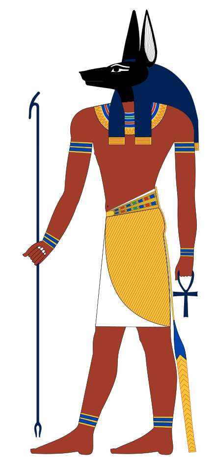

Anubis or Inpu, Anpu in Ancient Egyptian (/əˈnjuːbɪs/;[1] Ancient Greek: Ἄνουβις, Egyptian: inpw, Coptic: ⲁⲛⲟⲩⲡ Anoup) is the Greek name of the god of death, mummification, embalming, the afterlife, cemeteries, tombs, and the Underworld, in ancient Egyptian religion, usually depicted as a canine or a man with a canine head. Archeologists have identified Anubis's sacred animal as an Egyptian canid, the African golden wolf.[2][3][4][note 1]
Like many ancient Egyptian deities, Anubis assumed different roles in various contexts. Depicted as a protector of graves as early as the First Dynasty (c. 3100 – c. 2890 BC), Anubis was also an embalmer. By the Middle Kingdom (c. 2055 – 1650 BC) he was replaced by Osiris in his role as lord of the underworld. One of his prominent roles was as a god who ushered souls into the afterlife. He attended the weighing scale during the "Weighing of the Heart," in which it was determined whether a soul would be allowed to enter the realm of the dead.[5] Despite being one of the most ancient and "one of the most frequently depicted and mentioned gods" in the Egyptian pantheon, Anubis played almost no role in Egyptian myths.[6]
Anubis was depicted in black, a color that symbolized regeneration, life, the soil of the Nile River, and the discoloration of the corpse after embalming. Anubis is associated with his brother Wepwawet, another Egyptian god portrayed with a dog's head or in canine form, but with grey or white fur. Historians assume that the two figures were eventually combined.[7] Anubis' female counterpart is Anput. His daughter is the serpent goddess Kebechet.
